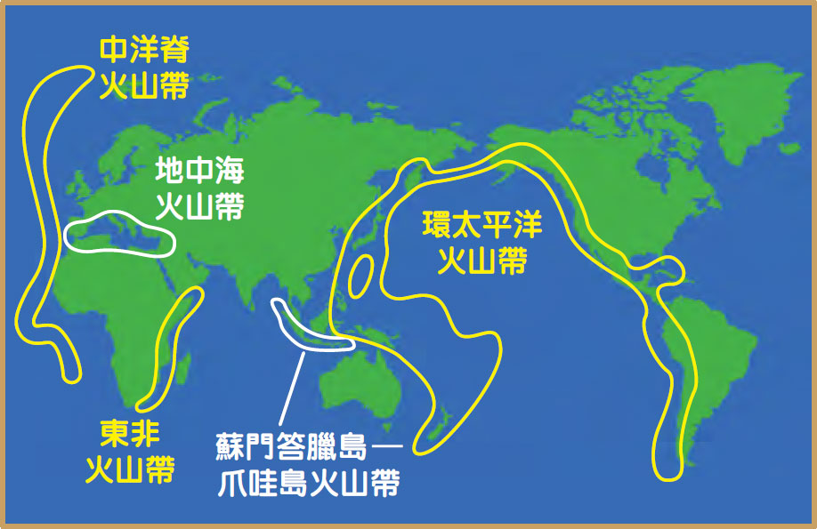
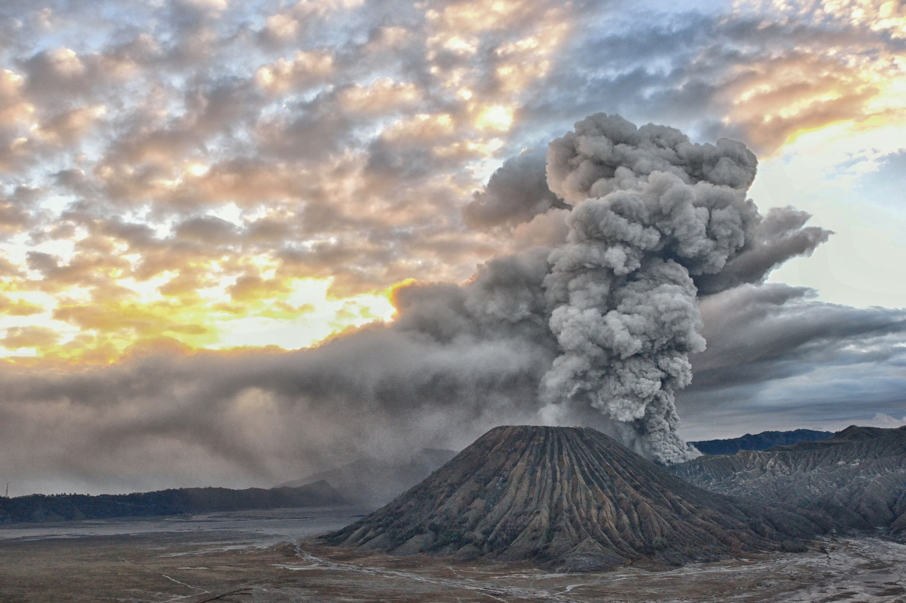
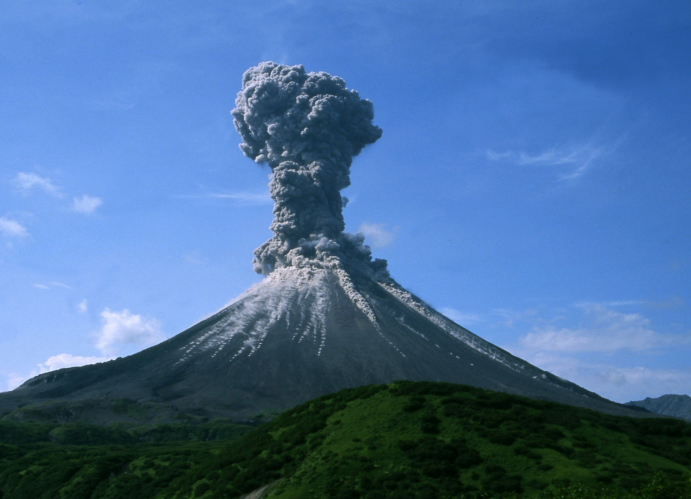

个人信息
张淑娴
张宇彤



项目背景
本网站集合了过去 10000 年地球火山及其喷发历史内容，为用户提供了一个全面且交互式的平台，利用在线地图对火山的名称、位置、类型和特征进行可视化展示和分析，帮助人们深入了解全球火山的分布情况，以及它们的喷发频率和规模。
火山的昨日：火山因其壮观和破坏力，经常被赋予神秘和力量的象征，成为人类文化中的一个永恒主题。在神话传说中，火山常常与火神或地神联系在一起。 例如，在希腊神话中，火山被认为是火神赫淮斯托斯（Hephaestus）的锻造场，他的火焰是从地下喷发到地面的。在夏威夷传说中，火山女神佩莱（Pele）被认为是火山活动的主宰者，她的情绪变化直接影响着火山的喷发。 在科学探索方面，火山学（Volcanology）是一门研究火山的科学，它涉及火山的形成、活动、喷发机制以及对环境和人类社会的影响。科学家们通过观察火山喷发、收集岩石样本、分析地震活动等方式，试图理解地球内部的动态过程。 庞贝古城（Pompeii）的毁灭就是一个著名的火山故事，公元79年，维苏威火山的喷发将整个城市埋在火山灰下，直到18世纪才被重新发现。这个故事反映了火山喷发对人类文明的深远影响。
火山的今天：全球火山的分布主要集中在地球的板块边界，尤其是活跃的板块边缘。这些区域包括环太平洋火山带（也称为“火环”），地中海-喜马拉雅火山带，以及大西洋中脊等。火山分布的模式与板块构造活动密切相关，尤其是板块之间的俯冲、碰撞和拉伸等过程。 此外，还有一些火山分布在板块内部，这些通常与地幔热柱活动有关，如夏威夷群岛的火山。这些火山通常不在板块边界上，但它们的形成与地幔中上升的热柱有关。 全球火山分布的研究对于理解地球内部的动力学过程、火山喷发的预测以及火山灾害的防范具有重要意义。通过对火山分布的分析，科学家们可以更好地理解地球内部的热量传递机制，以及火山活动对地球表面环境和人类社会的影响。
主要结论
- 1)火山分布最多的三个大洲是北美洲、亚洲和非洲，三个大洲集中了全球约90%的火山分布。
- 2)活火山分布最多的国家依次为美国（173个）、俄罗斯（161个）、印度尼西亚（139个）、日本（128个）和智利（76个）
项目展示